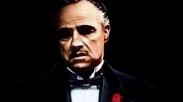

This movie is my favourite movie of all time. I shed tears watching this movie and it holds a special place in my heart. Your Name (Japanese: 君の名は。, Hepburn: Kimi no Na wa.) is a 2016 Japanese animated fantasy film written and directed by Makoto Shinkai, produced by CoMix Wave Films, and distributed by Toho. It depicts the story of high school students Taki Tachibana and Mitsuha Miyamizu, who suddenly began to swap bodies despite having never met, unleashing chaos on each other's lives. The film was inspired by the frequency of natural disasters in Japan.
Considered to be one of the best movies of all time by many. The amount of unique characters playing their role perfectly shows how well this movie was thought out and directed. The Godfather is a 1972 American epic gangster film directed by Francis Ford Coppola, who co-wrote the screenplay with Mario Puzo, based on Puzo's best-selling 1969 novel. The film stars an ensemble cast including Marlon Brando, Al Pacino, James Caan, Richard Castellano, Robert Duvall, Sterling Hayden, John Marley, Richard Conte and Diane Keaton. It is the first installment in The Godfather trilogy, chronicling the Corleone family under patriarch Vito Corleone (Brando) from 1945 to 1955. It focuses on the transformation of his youngest son, Michael Corleone (Pacino), from reluctant family outsider to ruthless mafia boss.
I hold this one in high regards. Infernal Affairs is a 2002 Hong Kong action thriller film directed by Andrew Lau and Alan Mak from a screenplay written by Mak and Felix Chong. The film stars Andy Lau, Tony Leung, Anthony Wong, Eric Tsang, Sammi Cheng and Kelly Chen. The film follows an undercover Hong Kong Police Force officer who infiltrates a triad and another police officer who is secretly a spy for the same triad. It is the first in the Infernal Affairs series and is followed by Infernal Affairs II and Infernal Affairs III (both 2003).